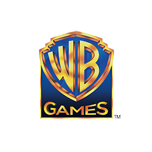

Warner Bros. Entertaiment
About Warner Bros. Interactive Entertaiment:

Warner Bros. Entertainment, Inc., also known as Warner Bros. Pictures or simply Warner Bros. (though the name was occasionally given in full form as Warner Brothers during the company's early years), is an American producer of film, television, and music entertainment.
One of the major film studios, it is a subsidiary of Time Warner, with its headquarters in Burbank, California and New York. Warner Bros. has several subsidiary companies, including Warner Bros. Studios, Warner Bros. Pictures, Warner Bros. Interactive Entertainment, Warner Bros. Television, Warner Bros. Animation, Warner Home Video, New Line Cinema, TheWB.com, and DC Entertainment. Warner owns half of The CW Television Network.
Warner Bros. is a member of the Motion Picture Association of America (MPAA).
History: 1903–25: Founding
The corporate name honors the four founding Warner brothers (born Wonskolaser [pron. WON Sko La' Ser] or Wonsal)—Harry (born Hirsz), Albert (born Aaron), Sam (born Szmul), and Jack (Itzhak or to some sources Jacob). Harry, Albert, Sam and their Jewish parents emigrated to North America from the part of Poland that had been subjugated to the Russian Empire following the 18th-century partitions of the Polish-Lithuanian Commonwealth near present-day Ostrołęka, Poland. Jack, the youngest, was born in Canada. The three elder brothers began in the movie theatre business, having acquired a movie projector with which they showed films in the mining towns of Pennsylvania and Ohio. They opened their first theater, the Cascade, in New Castle, Pennsylvania in 1903. (The site of the Cascade later became the Cascade Center, a shopping, dining and entertainment complex honoring its Warner Bros. heritage, though in late 2010 all of the businesses have closed and the complex is currently for sale.) When this original theatre building in New Castle was in danger of being demolished, the modern Warner Bros. called the modern building owners, and arranged a 3 way in hopes of saving it, between three men, Warner Bros, and the modern owners. The owners noted the fact that they were taking phone calls from all over the country in reference to the historical significance of the humble building that should be saved historically.
In 1904, the Warners founded the Pittsburgh-based Duquesne Amusement & Supply Company, to distribute films. In 1912, Harry Warner hired an auditor named Paul Ashley Chase. By the time of World War I they had begun producing films, and in 1918 the brothers opened the Warner Bros. studio on Sunset Boulevard in Hollywood. Sam and Jack Warner produced the pictures, while Harry and Albert Warner and their auditor and now controller Chase handled finance and distribution in New York City. It was during World War I and their first nationally syndicated film was My Four Years in Germany based on a popular book by former American Ambassador James W. Gerard. On April 4, 1923, with help from a loan given to Harry Warner by his banker Motley Flint, they formally incorporated as Warner Brothers Pictures, Incorporated. However, as late as the 1960s, Warner Bros. claimed 1905 as its founding date.
Warner Bros. – First National Studios, Burbank, c. 1928.
The first important deal for the company was the acquisition of the rights to Avery Hopwood's 1919 Broadway play, The Gold Diggers, from theatrical impresario David Belasco. However, what really put Warner Bros. on the Hollywood map was a dog, Rin Tin Tin, brought from France after World War I by an American soldier. Rin Tin Tin debuted in the feature Where the North Begins. The movie was so successful that Jack Warner agreed to sign the dog to star in more films for $1,000 per week. Rin Tin Tin became the top star at the studio. Jack Warner nicknamed him "The Mortgage Lifter" and the success boosted Darryl F. Zanuck's career. Zanuck eventually became a top producer for the studio and between 1928 and 1933 served as Jack Warner's right-hand man and executive producer, with responsibilities including the day-to-day production of films. More success came after Ernst Lubitsch was hired as head director; Harry Rapf left the studio and accepted an offer to work at MGM. Lubitsch's film The Marriage Circle was the studio's most successful film of 1924, and was on The New York Times best list for the year.
Despite the success of Rin Tin Tin and Lubitsch, Warners was still unable to achieve star power. As a result, Sam and Jack decided to offer Broadway actor John Barrymore the lead role in Beau Brummel. The film was so successful that Harry Warner agreed to sign Barrymore to a generous long-term contract; like The Marriage Circle, Beau Brummell was named one of the ten best films of the year by The New York Times. By the end of 1924, Warner Bros. was arguably the most successful independent studio in Hollywood, but it still competed with "The Big Three" Studios (First National, Paramount Pictures, and MGM). As a result, Harry Warner – while speaking at a convention of 1,500 independent exhibitors in Milwaukee, Wisconsin – was able to convince the filmmakers to spend $500,000 in newspaper advertising, and Harry saw this as an opportunity to finally be able to establish theaters in big cities like New York and Los Angeles.
As the studio prospered, it gained backing from Wall Street, and in 1924 Goldman Sachs arranged a major loan. With this new money, the Warners bought the pioneer Vitagraph Company which had a nation-wide distribution system. In 1925, Warners also experimented in radio, establishing a successful radio station, KFWB, in Los Angeles.
About Warner Bros. Games:
In 1995, Warner Bros. Interactive licensed out their first game property under their current name, Batman Forever to Acclaim Entertainment. They continued to license games based on Cartoon Network, DC Comics, Hanna-Barbera, Looney Tunes and various Warner Bros. film properties over the years to such video game publishers as Ubisoft, EA, Infogrames and THQ.
In 2003, they co-published their first video game, Looney Tunes: Back in Action. EA was the other publisher of the game. In 2004, Warner Bros. acquired developer Monolith Productions. In 2005, the WB Games label was created. The first game that Monolith developed in conjunction with Warner Bros. Entertainment was The Matrix Online which SEGA helped co-publish. In 2006, they bought a 10.3% stake in SCi Entertainment, the owner of Eidos Interactive. That same year, they released their first self published title (with no co-publishers), Justice League Heroes, which was distributed by Eidos on the Xbox. In 2007, their goal was for a five year plan to expand in the video game industry, which includes the acquisition of studios for internal development and the creation of a studio (WB Games) in the Seattle area that will run all the games published and developed by the company; starting with the acquisition of TT Games that same year for the amount of £100 million.
In April 2008, they increased their stake to 35% gaining distribution right of all Eidos games in the United States, Canada and Mexico. On December 15, 2008, right after SCi changed their name to Eidos plc, Warner acquired a total of 10 million shares of the company, raising its owned amount to 19.92%, after an agreement which prevented Time Warner from acquiring more shares was scrapped one month earlier. On January 28, 2009, The Hollywood Reporter reported the deal also gave Warner the rights of the Tomb Raider film series, previously owned by Paramount Pictures. On February 12, 2009, SQEX Ltd, a wholly owned subsidiary of Square Enix, announced a takeover offer worth £84.3 million (32p per share) for Eidos plc, which was backed by Warner Bros. as shareholder. Square Enix eventually took over the company April 22, 2009 and later changed the name to Square Enix Europe.
Warner Bros. announced on February 4, 2009 it had purchased independent developer Snowblind Studios. Terms of the deal were not disclosed, but the acquisition serves to strengthen the publisher's internal development effort. In 2009, Warner purchased most of the assets of American publisher Midway Games, operating under Chapter 11 bankruptcy protection, for $49 million. The assets purchased include Midway's studio in Chicago and Surreal Software, resulting in the ownership to the rights to the Joust, Mortal Kombat, The Suffering, Spy Hunter and Wheelman series. Midway Games had previously worked with Warner Bros. on several games including Mortal Kombat vs. DC Universe. Midway intended to hold an auction of its assets on June 29, 2009, but no other bids were placed. On July 10, 2009, the sale to Warner was completed for approximately $49 million. In the process, WB Games became the owner of the Blitz: The League series. On July 28, 2009, Midway's Mortal Kombat team was rebranded WB Games Chicago by its new owners and, in 2010 was renamed NetherRealm Studios.
On January 13, 2010, it was announced that Warner Bros. Interactive Entertainment will produce and have exclusive rights to Sesame Street video games starting in fall 2010 with Elmo's A-to-Zoo Adventure and Cookie's Counting Carnival. On February 23, 2010, Warner Bros. Home Entertainment Group announced it had acquired majority stake in Rocksteady Studios, an independent development studio based in London. Rocksteady and Warner had previously worked together in Batman: Arkham Asylum and Batman: Arkham City, and as been announced to work in the future with more Warner Bros. licenses.
On March 22, 2010, Warner Bros. Interactive is the latest videogame company to open a studio in Quebec. Current president Martin Tremblay will lead the new Montreal studio, which will be known as WB Games Montreal. This new studio will gradually grow to include more than 300 people by the end of 2015. Tremblay also said that Warner will open another studio in another city soon. Martin Tremblay told us that the new Montreal studio will focus on creating games based on the DC Comics license. On April 9, 2010, Warner Bros has announced it will publish a third installment to its F.E.A.R. series in fall of this year. Warner Bros. Home Entertainment Group announced on April 20, 2010 the acquisition of Turbine, Inc. the developer of the famous company MMOs Dungeons & Dragons Online and Lord of the Rings Online.
On June 4, 2010, Warner Bros. Home Entertainment Group and Turbine, inc. have said that the massively multiplayer online title Lord of the Rings Online is to become a free-to-play game this autumn. Warner Bros. Interactive Entertainment announces on June 10, 2010 that Mortal Kombat, the most brutal installment of the landmark fighting game to date was due for release on the PlayStation 3 computer entertainment system and Xbox 360 video game and entertainment system from Microsoft in 2011. Mortal Kombat was developed by the newly renamed NetherRealm Studios, led by Mortal Kombat creator and creative director Ed Boon. Branching out from Game Party for the Wii, Warner Bros. Interactive Entertainment set its sights on the Xbox 360's newest piece of technology on June 14, 2010, revealed Game Party: In Motion for Kinect. Arriving November 4 as a launch title, In Motion for Microsoft's full-body motion-sensing technology brings sports and arcade games to the hardware.
Warner Bros. Interactive also published Grasshopper Manufacture's Japanocentric game Lollipop Chainsaw, which was produced by Suda 51 of No More Heroes and Shadows of the Damned. It was also penned by James Gunn.
(source: http://www.giantbomb.com)
Warner Bros. Interactive Entertainment has been a rising star in the games publishing community, having published such recent hits as Batman Arkham Asylum, Mortal Kombat, and Bastion. But they weren't always such a major player in the industry; in fact, their presence was relatively minor until around 2007.
Batman Forever
Warner Bros. Interactive began licensing their properties under their current name around 1995, with the first being Batman Forever, licensed to Acclaim. They continued to license their most popular properties, such as DC Comics, Looney Tunes, and various Cartoon Network shows, as well as movie licenses, to various companies over a stretch of about eight years. While Warner Bros. had little to no involvement in the development of any of these games, it was a quick and easy way for them to make money on their existing properties while handing development over to more experienced industry veterans.
Only problem was, these industry veterans were often working under harsh deadlines with little support, and the quality of the products being produced as a result of these deals was suffering greatly. In 2003, Warner Bros. co-published Looney Tunes: Back In Action with EA. It was their first little experiment with video game publishing. In 2004, Warner Bros. acquired Monolith Productions, developers of the FEAR franchise. They were slowly taking a more active role in the games industry, tentatively dipping a toe in the water before jumping in. They wanted to see if it was viable for them to make Warner Bros. a household name in gaming, just as it was in other forms of entertainment.
Under Warner Bros.' guidance, Monolith developed The Matrix Online, which was co-published by SEGA. Following the game's release, Warner Bros. continued to seek out new partners in the games industry. They bought a 10.3% stake in SCi Entertainment, the owners of Eidos Interactive, in 2006. Later that year, they published their first game on their own, called Justice League Heroes.
By 2007, Warner Bros. had seen that there was, in fact, a substantial market to be had on consoles, and they wanted their name to be as respected in gaming as it was in film. To this end, they announced a five year plan to expand into the gaming industry. They outlined a plan to acquire more game studios, as well as to create their own internal studios in the Seattle area to ensure quality games were developed. They began their expansion with the acquisition of TT Games later that year. TT Games would go on to become an important factor in Warner Bros. growth; they have been developing LEGO games under the Warner banner for years now, beginning with the successful LEGO Star Wars games.
In April of 2008, Warner Bros. increased their stake in Eidos, gaining a total of 35% along with rights to distribution of their games in the US, Canada, and Mexico. Later that year, in December, Warner Bros. again increased their stake in the company, making for a total of 10 million shares and also granting Warner Bros. the rights to distribute any new Tomb Raider films that may have been in production. Warner's romance with Eidos wasn't meant to last, though, as Square Enix stepped in during 2009 and slowly gained control of the company, changing their name to Square Enix Europe.
Also in 2009, Warner Bros. announced that they had acquired Snowblind Studios in an attempt to strengthen their internal development prowess. Later that year, when troubled developer Midway finally went under, Warner Bros. jumped at the opportunity to acquire many of their old assets, including the powerful Mortal Kombat franchise and the then near-completion The Wheelman. Other assets gained included Joust, The Suffering, Blitz: The League, and Spy Hunter, for a total of $49 million, although Warner Bros. has yet to announce anything regarding these properties. Midway had previously worked in conjunction with Warner Bros. on Mortal Kombat vs DC Universe, so the MK acquisition was a natural one. In July 2009, Warner Bros. renamed their MK team to WB Games Chicago, later to be changed again to NetherRealm Studios.
In August 2009, Warner Bros. and Rocksteady Studios released Batman Arkham Asylum for the Xbox 360, PS3, and PC. Due to the stigma associated with licensed games, the industry as a whole was tentatively excited about Arkham Asylum. Its release turned out to be Warner Bros.' biggest hit yet, raking in positive review scores and Game of the Year nominations from dozens of respected sources. Its success was unanticipated and vast. Shortly after, in February 2010, Warner Bros. announced that they had officially acquired Rocksteady Studios as an internal developer.
On March 22, 2010, Warner Bros. announced that they would be opening a new games studio in Quebec, called WB Games Montreal. It has been projected that the studio will grow to over 300 employees by the end of 2015. They are planning on opening another studio in the city soon as well. These Canadian studios will be largely focused on developing games under the DC Comics label. Continuing a long list of acquisitions, Warner Bros. also took Turbine, developer of Dungeons and Dragons Online and Lord of the Rings Online, under their wing. This was quickly followed by the announcement that Turbine's Lord of the Rings Online would go free to play in the fall of 2010. Also in 2010, Warner Bros. announced development of a new Mortal Kombat title for PS3 and 360, and a new FEAR title, both eventually to be released in 2011. Finally, to round out 2010, Warner Bros. released Game Party: In Motion for Microsoft's new Kinect peripheral.
2011 is set to be another big year for Warner Bros. Interactive. They released the Mortal Kombat reboot on April 19 to critical acclaim and high sales, especially high for a fighting game. FEAR 3 was released on June 21, and although it received mixed reviews, it was still moderately successful. The company also published Supergiant Games' Bation as part of Microsoft's Summer of Arcade initiative, and this is perhaps their greatest success of 2011 so far. The game received numerous high review scores, averaging an 86 and an 88 on Metacritic for the 360 and PC versions, respectively.
On October 18, 2011, Warner Bros. Interactive released their most anticipated game yet, Batman Arkham City. This game, also developed by Rocksteady Studios, takes Batman out of the confines of the Asylum and into a wide open city teeming with criminal activity.
Warner Bros. Interactive is going strong, and they are only becoming more prominent in the game development scene. In mid-2011, they announced another Batman game, this one developed by Monolith. Called Gotham City Impostors, this game will be a squad-based downloadable shooter for consoles. It sees Batman and The Joker inspiring vigilantes across Gotham to take up arms and fight for their respective sides, leading to a bunch of costumed firefights across the city.
Once Upon A Monster. It's fun for the whole simulated family!
Since Grasshopper Manufacture's relationship with EA's publishing branch fell through with the neutered release of Shadows of the Damned, Warner Bros. Interactive has announced that they will be publishing the company's subsequent games in the North American markets in stead of EA. In the future, Warner Bros. will publish Lollipop Chainsaw with the distinctive developer. Warner will also be working with another acclaimed and unique developer, Double Fine Productions, to create a new Sesame Street game for the Kinect. This game, Sesame Street Once Upon A Monster, was released on October 11, 2011, to generally good reviews despite its status as a children's game.
In the future, Warner Bros. Interactive plans on continuing their strong lineup of releases, combining both licensed games based on their TV shows and movies, and original games such as Lollipop Chainsaw, to make for a strong and varied portfolio. Their planned future releases include, as of late 2011, the conclusion to the LEGO Harry Potter series, a sequel to the original Happy Feet game to premiere alongside the movie sequel, The Lord of the Rings: War in the North, and numerous other licensed games. The company anticipates Arkham City to be a great success, and to fuel their continued rise as a prominent game publisher.
Back to top
Read full article on wikipedia
Midway page
NetherRealm Official site
Warnerbros Official site